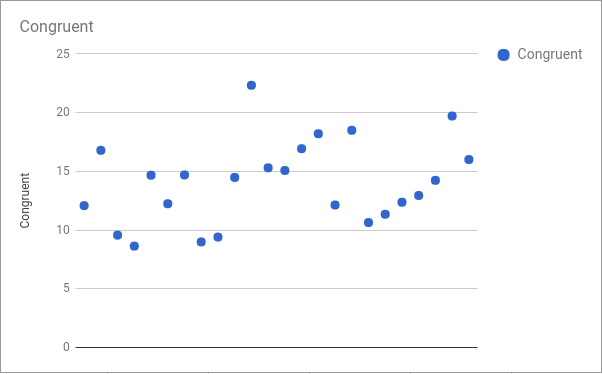
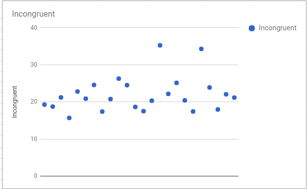

The null hypothesis is that the taken to recognize the color of Incogruent words is grater then or less then that of recognizing color of Congruent words
Alternative hypothesis:Thus in alternative hypothesis where the recognizing time for Congruent word is less than that of Incongruent words
Kind of statistical testHere One tailed test(dependent) using t-table is performed for the given sample datasets (time taken to recognize color ofcongruent and Incongruent word ).By this test we want get the evidence to prove μc < μI for the whole population
Since we want to prove it for whole population using z-table will not be appropriate hence we are using t-table| Congruent | Incongruent | Difference | |
|---|---|---|---|
| Mean | 14.05 | 22.01 | -7.96 |
| Median | 15.19 | 18.07 | -2.90 |
| Mode | 22.32 | 35.25 | -5.153 |
| Standard deviation | 3.56 | 4.80 | 4.86 |
| Standard error | 0.73 | 0.98 | 0.99 |
| Graph for congruent sample data | Graph for congruent sample data |
|---|---|
|  |  |
By comparing the both graphes form the sample data for Congruent and Incongruent test result we can clearly see the the time taken for the Samples(contestant) to read the incongruent words is greater then/equal to that of congruent words not less then it
Here at 0.01(99%) alpha level the result of one-tailed test negative and it also rejects the null hypothesis.So we have the evidence to prove that it takes less time to recognize the colour of words with the congruent condition compared to words with the incongruent condition.
In this effect the time taking for recognize the color of the Incongruent words is larger/equal to time taken for recognize the color of Congurent words beacuse the brain gets confused. Since it recogonizes the word first and then the color, thus result in time lapse. Brain takes much time to recogonize color than a text
Similarly we can also use the color square for this test